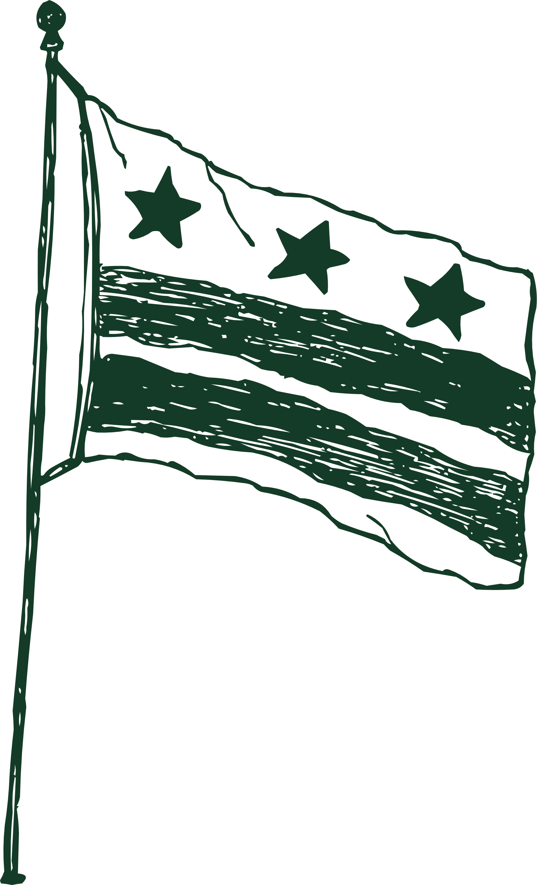

D.C. Guide

A few of our favorite places in our favorite neighborhoods. Everything here is accessible from The Wharf by metro or a good walk.
The Wharf
This is where the venue is! The Wharf is a new area with many restaurants and shops, all along the Southwest waterfront.
Where to Eat
There are dozens of places to get lunch or dinner — our favorites are Officina and Surfside. Pluma is a also great bakery at the southern end of The Wharf.
What to Do
Take a walk south along the water to the Titanic Memorial. Circle back and shop at an outpost of Politics & Prose, DC's original indie bookstore, and Shop Made in DC, a store with a ton of locally-made gifts. Check out the Maine Avenue Fish Market at the north end — it's the oldest continuously operating fish market in the United States!
The National Mall
DC's major museums need no introduction. The Mall is a short metro ride or a longer walk north from The Wharf.
Where to Eat
Good options are few and far between on the Mall. Check out Bar Americano and Dolcezza for coffee, and Teaism just off the Mall near the Navy Memorial for a great lunch.
What to Do
We especially love the Hirshhorn and the National Gallery of Art. The Jefferson Memorial is only a 20-minute walk from the hotel. From there, you can circle the Tidal Basin and explore some of the Mall's beautiful, more secluded spaces like the FDR Memorial.
Navy Yard
One metro stop east of The Wharf, along the Anacostia waterfront. Home of the Washington Nationals.
Where to Eat
Navy Yard has a ton of great bars and restaurants, including lots of fast-casual options. Check out Bethesda Bagel for a Saturday morning bagel (not as good as New York bagels — sorry in advance!!!) and Albi or Osteria Morini for a great Friday night dinner.
What to Do
Grab a Capital Bikeshare bike and ride along the Anacostia Riverwalk Trail. Have lunch or a beer at Dacha or Solace.
Eastern Market
A super cute neighborhood on Capitol Hill. It's also where Andrew grew up!
Where to Eat
For a nice dinner, book ahead at The Duck & The Peach or Acqua al 2, or keep it casual at Mr. Henry's, a Hill institution.
What to Do
Start the morning with a pastry at Boulangerie Saint Georges. Browse the famous Eastern Market farmers and flea markets before grabbing lunch at The Market Lunch inside the main market hall. Check out Capitol Hill Books. Venture down East Capitol Street, which should be decked out in Halloween decorations, and leads directly to the Capitol building.
Dupont Circle
Our neighborhood — a bit farther from the venue, but worth the trip up on the Red Line.
Where to Eat
Check out some of our favorite spots, including Astoria and Bistrot du Coin.
What to Do
Visit the Sunday morning farmers market. Find the Seylou Bakery stand, walk over to Kramers bookstore, or go for a big walk from Dupont over to 14th Street and Logan Circle!